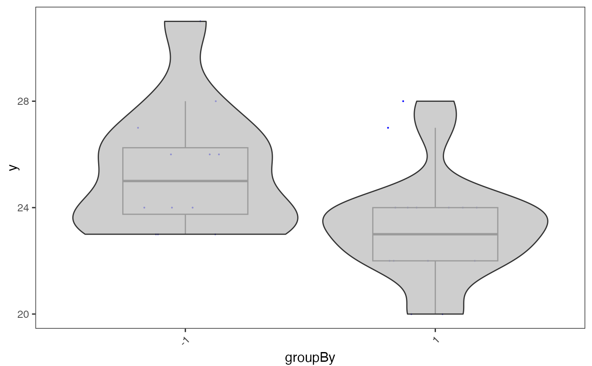

Visualizes values stored in the colData slot of a SingleCellExperiment object via a violin plot.
plotSCEViolinColData(
inSCE,
coldata,
sample = NULL,
groupBy = NULL,
violin = TRUE,
boxplot = TRUE,
dots = TRUE,
plotOrder = NULL,
xlab = NULL,
ylab = NULL,
baseSize = 12,
axisSize = NULL,
axisLabelSize = NULL,
dotSize = 0.1,
transparency = 1,
defaultTheme = TRUE,
gridLine = FALSE,
summary = NULL,
summaryTextSize = 3,
title = NULL,
titleSize = NULL,
hcutoff = NULL,
hcolor = "red",
hsize = 1,
hlinetype = 1,
vcutoff = NULL,
vcolor = "red",
vsize = 1,
vlinetype = 1,
combinePlot = "none",
plotLabels = NULL
)Input SingleCellExperiment object with saved dimension reduction components or a variable with saved results. Required.
colData value that will be plotted.
Character vector. Indicates which sample each cell belongs to.
Groupings for each numeric value. A user may input a vector equal length to the number of the samples in the SingleCellExperiment object, or can be retrieved from the colData slot. Default NULL.
Boolean. If TRUE, will plot the violin plot. Default TRUE.
Boolean. If TRUE, will plot boxplots for each violin plot. Default TRUE.
Boolean. If TRUE, will plot dots for each violin plot. Default TRUE.
Character vector. If set, reorders the violin plots in the order of the character vector when `groupBy` is set. Default NULL.
Character vector. Label for x-axis. Default NULL.
Character vector. Label for y-axis. Default NULL.
The base font size for all text. Default 12. Can be overwritten by titleSize, axisSize, and axisLabelSize.
Size of x/y-axis ticks. Default NULL.
Size of x/y-axis labels. Default NULL.
Size of dots. Default 0.1.
Transparency of the dots, values will be 0-1. Default 1.
Removes grid in plot and sets axis title size to 10 when TRUE. Default TRUE.
Adds a horizontal grid line if TRUE. Will still be drawn even if defaultTheme is TRUE. Default FALSE.
Adds a summary statistic, as well as a crossbar to the violin plot. Options are "mean" or "median". Default NULL.
The text size of the summary statistic displayed above the violin plot. Default 3.
Title of plot. Default NULL.
Size of title of plot. Default 15.
Adds a horizontal line with the y-intercept at given value. Default NULL.
Character. A color available from `colors()`. Controls the color of the horizontal cutoff line, if drawn. Default 'black'.
Size of horizontal line, if drawn. Default 0.5.
Type of horizontal line, if drawn. can be specified with either an integer or a name (0 = blank, 1 = solid, 2 = dashed, 3 = dotted, 4 = dotdash, 5 = longdash, 6 = twodash). Default 1.
Adds a vertical line with the x-intercept at given value. Default NULL.
Character. A color available from `colors()`. Controls the color of the vertical cutoff line, if drawn. Default 'black'.
Size of vertical line, if drawn. Default 0.5.
Type of vertical line, if drawn. can be specified with either an integer or a name (0 = blank, 1 = solid, 2 = dashed, 3 = dotted, 4 = dotdash, 5 = longdash, 6 = twodash). Default 1.
Must be either "all", "sample", or "none". "all" will combine all plots into a single .ggplot object, while "sample" will output a list of plots separated by sample. Default "none".
labels to each plot. If set to "default", will use the name of the samples as the labels. If set to "none", no label will be plotted.
a ggplot of the violin plot of coldata.
data("mouseBrainSubsetSCE")
plotSCEViolinColData(
inSCE = mouseBrainSubsetSCE,
coldata = "age", groupBy = "sex"
)
